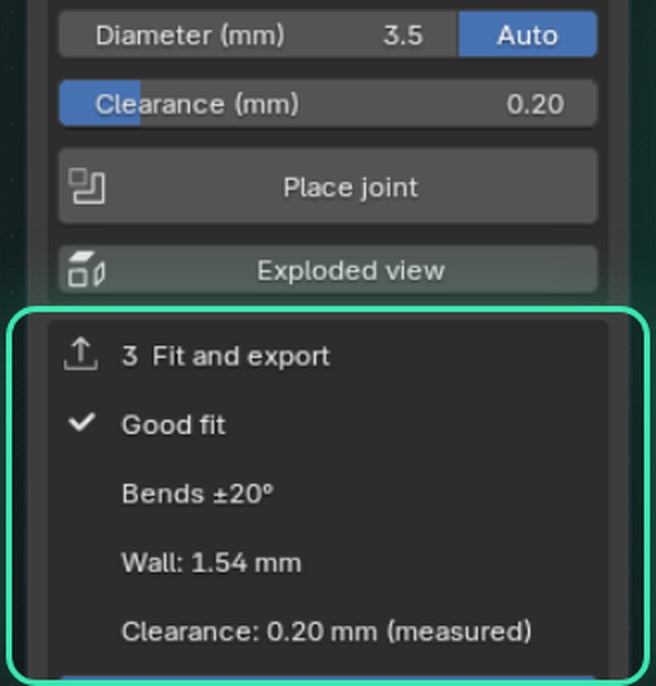

Tips · Click Joints
Printable joints in Blender
Short tips for ball and pin joints you print in separate parts and snap together. One tip per day, each with one picture. Every printer is different, so treat the numbers as a place to start and test on your own printer.
-
Day 1Ball joint too tight to snap in?
If the ball and the socket have the exact same size in the model, the printed parts jam or never click together, because every printer adds a little extra plastic. Leave a small gap, the clearance, between them.
Around 0.2 mm is a common place to start on an FDM printer, but every printer is different: print a small test first and adjust.
In Click Joints you set the clearance in mm before you place the joint, and after placing it the panel shows the clearance it measured on your mesh.

Set it before you place the joint, read it back after.
The tool in the tips
Click Joints is a free Blender add-on that cuts a ball or pin joint into your figure, with the clearance in mm and the measured bend range of every ball joint. More about Click Joints.
Made by Thijs at Dortus.